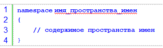
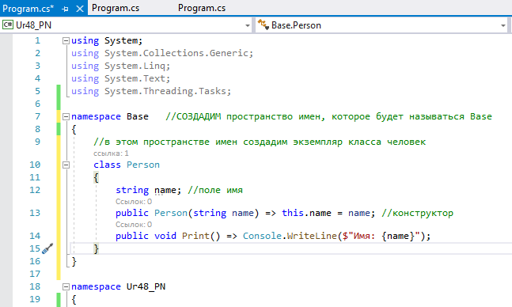
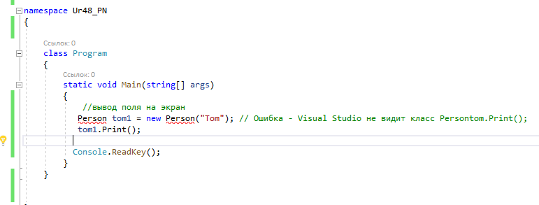
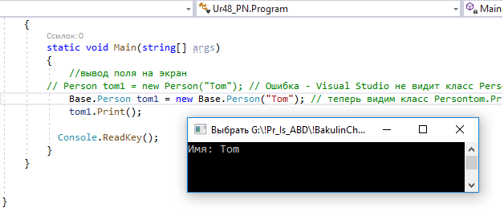
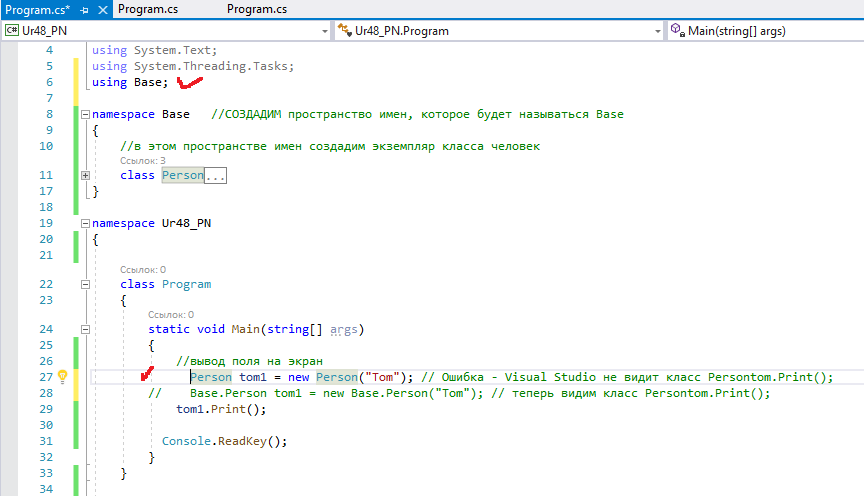
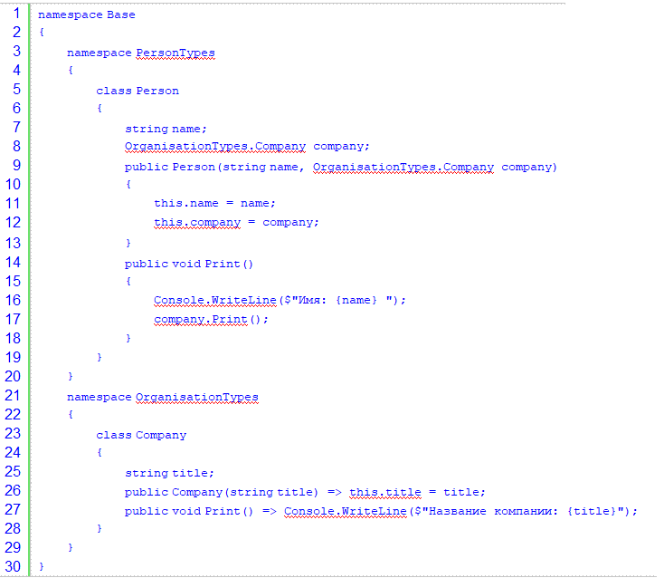
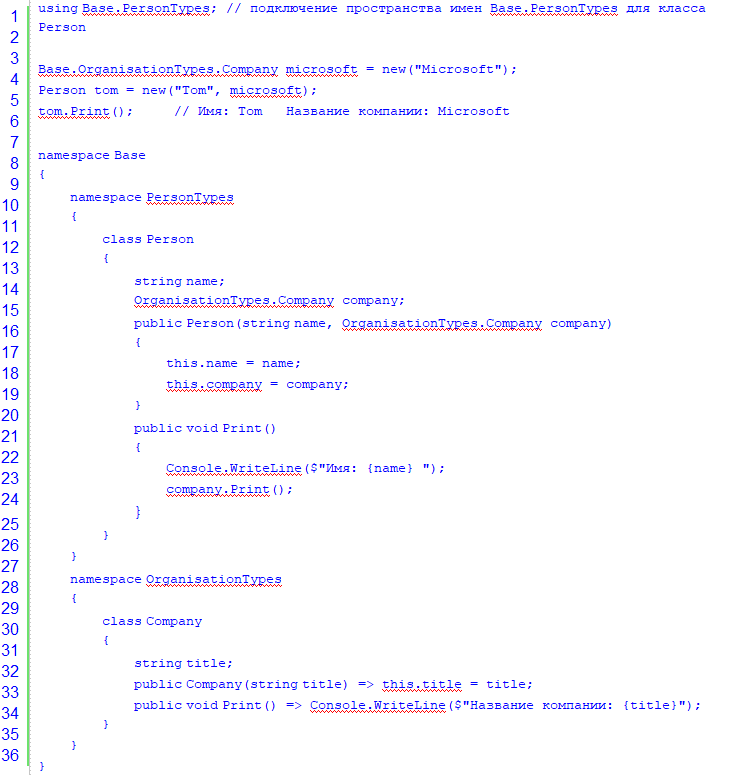
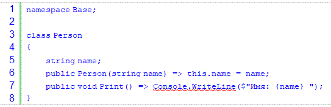
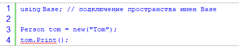

Оператор using говорит о том, что мы хотим использовать
пространство имен system. Теперь при вызове метода система
сначала станет искать его у текущего объекта, и, если он не
будет найден, произведет поиск в выбранном пространстве имен.
Дело в том, что полный путь вызова метода
WriteLine ( ) выглядит следующим образом:
System. Console.WriteLine ("Hello World! ! ! ") ;
У System есть класс Console, а у Console есть метод WriteLine ( ) . Чтобы не писать такую длинную цепочку, мы говорим, что мы находимся в пространстве System и используем его методы и свойства.
Пространство имен (namespace) в C# представляет собой некий контейнер для логического объединения именованных сущностей, таких как классы, интерфейсы, перечисления и тому подобное. Для чего нужны такие контейнеры? Ну во-первых, пространства имен позволяют логически группировать классы и другие сущности, а во-вторых, позволяют использовать одни и те же имена для сущностей в разных пространствах имен.
Пространство имен — это область, в пределах которой названия типов должны быть уникальны. Обычно типы организуются в иерархические пространства имен с целью избежать конфликта названий и чтобы названия типов было легко найти. Пространство имен — неотъемлемая часть названия типа.
Обычно определяемые классы и другие типы в .NET не существуют сами по себе, а заключаются в специальные контейнеры - пространства имен. Пространства имен позволяют организовать код программы в логические блоки, позволяют объединить и отделить от остального кода некоторую функциональность, которая связана некоторой общей идеей или которая выполняет определенную задачу.
Для определения пространства имен применяется ключевое слово namespace, после которого идет название название пространства имен:

Например, определим в файле Program.cs пространство имен, которое будет называться Base

Здесь пространство имен содержит класс Person, которой имеет одну переменную - name, конструктор и метод Print.

Теперь попробуем использовать класс Person :

Здесь на первой строке мы столкнемся с ошибкой, так как Visual Studio не может найти класс Person. Чтобы все-таки обратиться к классу Person, необходимо использовать полное имя этого класса с учетом пространства имен:

Поскольку класс Person располагается в пространстве имен Base, то его полное имя - Base.Person. Соответственно, используя это имя, мы можем обращаться к данному классу вне его пространства имен.
Подключение пространства имен
Однако полное имя класса с учетом пространства имен добавляет в код избыточность - особенно, если пространство имен содержит множество классов, которые мы хотим использовать. И чтобы не писать полное имя класса, мы можем просто подключить пространство имен с помощью директивы using:

Вложенные пространства имен
Одни пространства имен могут содержать другие. Например:

В данном случае классы Person и Company находятся в разных
вложенных пространствах имен, поэтому чтобы в классе Person
использовать класс Company, надо прописывать имя класса с учетом
его пространства имен: OrganisationTypes.Company (так
как оба класса в итоге находятся в общем пространстве - Base, то
его имя можно не указывать в названии класса) или подключать
пространство имен класса Company с помощью директивы using.
Для обращения к этим классам вне пространства Base необходимо использовать всю цепочку пространств имен:

Пространства имен уровня файла
Начиная с .NET 6 и C# 10 можно определять пространства имен на уровне файла. Например, добавим в проект новый файл с кодом c#. Для этого в Visual Studio нажмем на название проекта правой кнопкой мыши и в появившемся меню выберем пункт Add -> New Item...

В окне добавления нового элемента выберем пункт Class и поле Name в качестве имени файла укажем Base.cs

После этого в проект будет добавлен файл Base.cs. Удалим из него все содержимое по умолчанию и определим в нем следующий код:

Директива namespace
Base в начале файла указывает, что
содержимое файла будет представлять пространство имен Base.
Теперь подключим это пространство имен в файле Program.cs:
